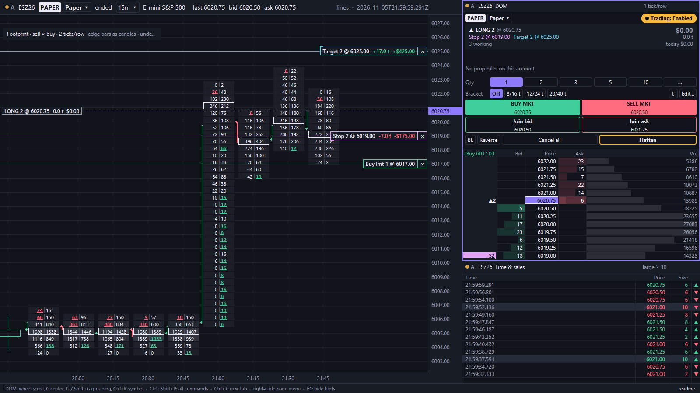
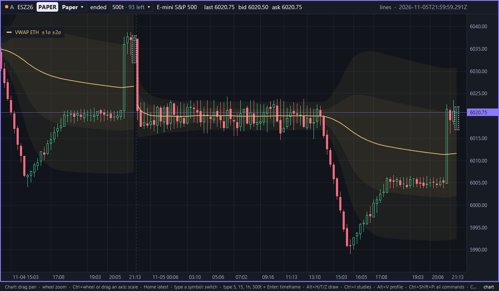
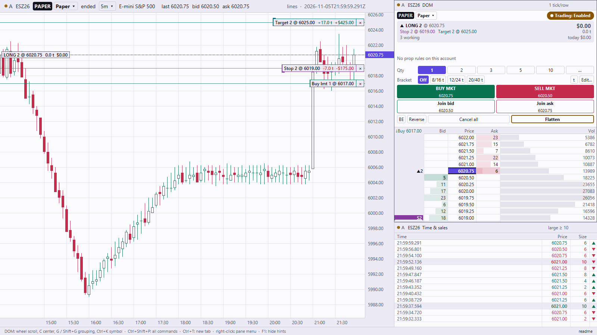

Native charts, DOM and order flow for discretionary and prop-firm traders. Built in Rust: exact prices, nothing dropped, and nothing between your click and your order.

Everything here works today, on mock, replay and live crypto feeds.
See and drag your orders on the chart. Drag from the position line to set a stop or target. Exits are reduce-only and can never flip you.
A fixed-row ladder with market buttons, brackets, and a price trail. The layout never shifts under your pointer.
Footprint, volume profile, cumulative delta and VWAP, rebuilt from stored trades the moment you open the app.
Time, tick, volume, range and seconds bars. Type 500t, 10r or 5 and press Enter.
Daily loss, trailing drawdown, max trades and cooldowns, enforced before the order leaves, never after.
Every round trip with MAE/MFE and tags. Strategies run on paper through the same rules as your clicks.


Latest release: v0.3.1
One platform, many data sources and brokers, connected through the same safety rules.